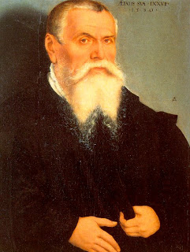

Санхедрин 17 - Верховный Санхедрин
Верховный Санхедрин состоял из семидесяти одного члена, поскольку изначальный Санхедрин состоял из семидесяти, и ещё Моисей. Однако Рабби Йехуда утверждает, что в нём было всего семьдесят членов, поскольку Моисей уже включён в счёт изначальных семидесяти.
Чтобы выбрать семьдесят, Моисей выбрал по шесть из каждого колена, а затем приготовил семьдесят два лотерейых билета, на которых написал "Мудрец", но на двух не написал ничего. Однако Ельдад и Мейдад решили остаться в лагере, потому что считали, что недостойны такого уважения (по другой версии, из боязни отказа). В утешение они получили пророческий дар.
Члены Санхедрина должны быть внушительного роста, мудрыми, разумно-зрелого возраста, знакомыми с колдовством, и владеющие семьюдесятью языками, чтобы они могли выслушивать свидетельские показание сами, а не через переводчика. Они должны быть в состоянии вывести из Торы что что-либо, что всем известно как некошерное, на самом дели кошерно.